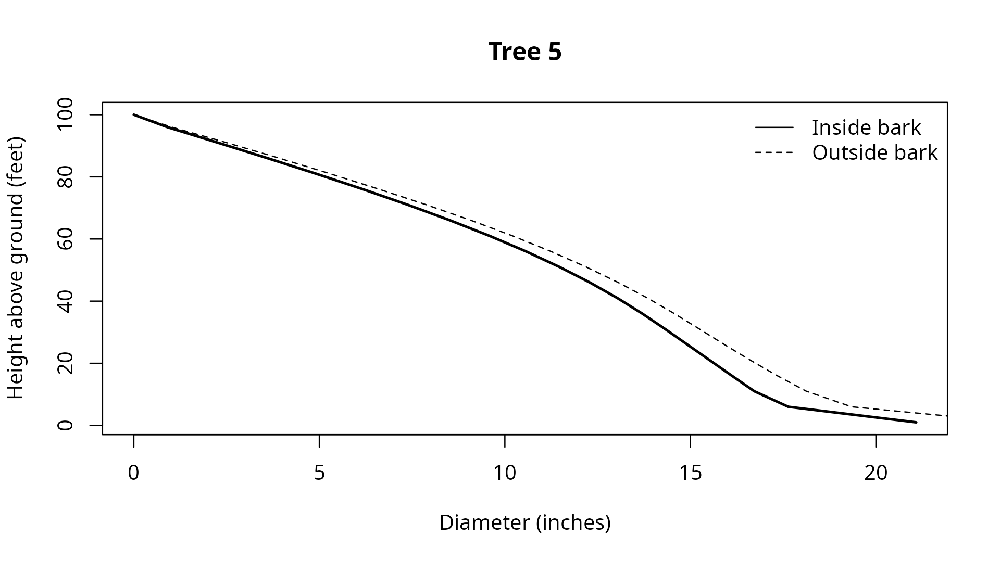

Stem calculations measure diameters, locate diameter limits, and integrate volume between specified points on a tree. Use them to inspect the taper underlying a product calculation or measure a section without selecting logs. Diameters enter and return in inches, heights use feet, and solid volume returns in cubic feet.
What does the selected profile look like?
stem_profile() samples each tree between requested
bounds and includes the ending height. The default lower bound is the
stump, and the default upper bound is the tip. Each row retains
tree_id, its measurement height, both bark diameters,
cumulative volumes from the lower bound, and status.
## Attach the calculation and data tools
library(merchandiser)
library(dplyr)
## Sample the stored equation along this tree
profile <- stem_profile(tree_id = tree$tree_id,
dbh = tree$dbh,
ht = tree$ht,
spcd = tree$spcd,
model = tree$model,
step = 5)Sampled profile values
| tree_id | height (feet) | inside diameter (inches) | outside diameter (inches) | inside volume (cubic feet) | outside volume (cubic feet) | status |
|---|---|---|---|---|---|---|
| 5 | 1 | 21.085 | 23.711 | 0.000 | 0.000 | 0 |
| 5 | 6 | 17.639 | 19.343 | 10.093 | 11.933 | 0 |
| 5 | 11 | 16.723 | 18.126 | 18.141 | 21.430 | 0 |
| 5 | 16 | 16.117 | 17.341 | 25.501 | 29.999 | 0 |
| 5 | 21 | 15.519 | 16.615 | 32.326 | 37.858 | 0 |
| 5 | 26 | 14.921 | 15.920 | 38.645 | 45.074 | 0 |
| 5 | 31 | 14.322 | 15.247 | 44.477 | 51.696 | 0 |
| 5 | 36 | 13.702 | 14.566 | 49.834 | 57.759 | 0 |
| 5 | 41 | 13.031 | 13.843 | 54.710 | 63.266 | 0 |
| 5 | 46 | 12.291 | 13.055 | 59.086 | 68.205 | 0 |
| 5 | 51 | 11.472 | 12.190 | 62.940 | 72.556 | 0 |
| 5 | 56 | 10.572 | 11.242 | 66.259 | 76.306 | 0 |
| 5 | 61 | 9.588 | 10.208 | 69.036 | 79.450 | 0 |
| 5 | 66 | 8.524 | 9.089 | 71.279 | 81.995 | 0 |
| 5 | 71 | 7.385 | 7.888 | 73.012 | 83.966 | 0 |
| 5 | 76 | 6.179 | 6.614 | 74.275 | 85.406 | 0 |
| 5 | 81 | 4.916 | 5.292 | 75.124 | 86.378 | 0 |
| 5 | 86 | 3.607 | 3.924 | 75.627 | 86.962 | 0 |
| 5 | 91 | 2.265 | 2.504 | 75.871 | 87.249 | 0 |
| 5 | 96 | 0.905 | 1.022 | 75.949 | 87.339 | 0 |
| 5 | 100 | 0.000 | 0.000 | 75.958 | 87.346 | 0 |
The final profile row reaches 100 feet, the supplied total height.
## Draw inside and outside bark stem diameters
plot(profile)
The final profile row reaches 100 feet, matching the endpoint in the drawing. Solid and dashed lines distinguish inside and outside bark diameters.
What is the diameter at a specified height?
dib() and dob() evaluate the selected
equation at a height above ground. Their result contains one value and
one status for each input tree. They retain input order but do not add
identifiers, so attach the measurements to the original tree list when
identifiers are needed.
## Measure inside bark diameter at the chosen height
inside <- dib(dbh = tree$dbh,
ht = tree$ht,
h = 20,
spcd = tree$spcd,
model = tree$model)
## Measure outside bark diameter at the same height
outside <- dob(dbh = tree$dbh,
ht = tree$ht,
h = 20,
spcd = tree$spcd,
model = tree$model)| basis | diameter (inches) | status |
|---|---|---|
| inside | 15.638 | 0 |
| outside | 16.757 | 0 |
The inside bark diameter is 15.638 inches at the requested height. An equation without an outside bark capability needs a supported bark ratio or returns a capability status.
Where does the stem reach a diameter limit?
The inverse functions return the height corresponding to a target diameter on the selected bark basis. Under the default compatibility setting, a profile with multiple crossings returns the highest crossing and reports the condition. Source compatibility can instead reproduce the source inverse behavior described under Taper equations. This matters when using a diameter limit to bound a section near a butt irregularity.
## Locate the inside bark diameter measured above
inside_height <- height_at_dib(dbh = tree$dbh,
ht = tree$ht,
dib = inside$value,
spcd = tree$spcd,
model = tree$model)
## Locate the corresponding outside bark diameter
outside_height <- height_at_dob(dbh = tree$dbh,
ht = tree$ht,
dob = outside$value,
spcd = tree$spcd,
model = tree$model)| basis | height (feet) | status |
|---|---|---|
| inside | 20 | 0 |
| outside | 20 | 0 |
The inverse returns 20 feet for the inside bark diameter previously calculated at that height.
How much wood is in a section?
stem_volume() accepts height or diameter bounds. Specify
at most one lower bound and one upper bound, using from,
from_dib, or from_dob below and the
corresponding to argument above. Diameter bounds locate the
section independently of the bark basis used for its volume.
## Measure wood between explicit heights above ground
section <- stem_volume(dbh = tree$dbh,
ht = tree$ht,
spcd = tree$spcd,
model = tree$model,
from = 1,
to = 33,
inside_bark = TRUE)| volume (cubic feet) | status |
|---|---|
| 46.677 | 0 |
The section contains 46.677 cubic feet inside bark. The lower bound must remain below the upper bound for a usable section.
green_weight() converts solid volume to short tons using
species wood and bark properties. Its default stem component includes
wood and attached bark. component can instead select wood
or bark, and moisture can request dry mass. Explicit
property inputs override the corresponding species defaults. This is a
merchandising weight calculation, not a carbon calculation.
## Convert inside bark solid volume to green stem weight
weight <- green_weight(volume = section$value,
spcd = tree$spcd,
inside_bark = TRUE)| green stem weight (short tons) | status |
|---|---|
| 1.097 | 0 |
The section’s wood and attached bark weigh 1.097 green short tons under the species defaults.
Which taper equation is being used?
Leaving model unspecified selects the species default
from default_taper_models. An explicit model identifier
takes precedence. In merchandise(), a
taper_map supplies unique spcd and
model columns for custom species assignments. A supplied
map must cover the trees being calculated, with no fallback for an
omitted species. The map is validated even when model is
explicit.
## Inspect the stored model and confirm it can be resolved
selected_model <- get_taper_model(model = tree$model)
## Check whether the selected identifier is available
has_taper_model(model = selected_model$id)
#> [1] TRUE
## Inspect the identifier passed to the measurement calls
selected_model$id
#> [1] "F00FW2W202"The stored identifier resolves to F00FW2W202, so it can be passed directly to the stem functions. Availability alone does not check species scope or required auxiliary measurements.
## List registered models for this species
models <- taper_models(spcd = tree$spcd)| id | form | has_dob | has_inverse | has_integral |
|---|---|---|---|---|
| 100FW2W202 | flewelling_2pt | TRUE | FALSE | TRUE |
| 100JB2W202 | r1_taper | FALSE | TRUE | TRUE |
| 200CZ2W202 | r2_taper | FALSE | TRUE | TRUE |
| 200CZ3W202 | r2_taper | FALSE | TRUE | TRUE |
| 200FW2W202 | flewelling_2pt | TRUE | FALSE | TRUE |
The first listed model is 100FW2W202. The capability columns indicate whether the model supplies outside bark diameter, an inverse, and a volume integral, with numerical fallbacks available for the latter two.
species_reference also records species names, wood
density, and bark ratios. Calculation calls use numeric species codes. A
species default is a stored equation assignment, not a fitted
relationship inferred from the submitted tree list.
Scalar inputs recycle to the number of trees. Other vector lengths
must agree. merchandise() and stem_profile()
require unique, nonmissing tree identifiers, while repeated measurement
rows in fit_taper() deliberately share identifiers. Invalid
tree inputs retain their place in vector calculations and receive a
status rather than shifting the remaining rows.
Where is trim recorded?
A log occupies its nominal length plus trim, is scaled on its nominal length, and leaves the trim wood in the residual record. This separates the occupied stem interval from the wood included in the product scale.
## Define a nominal log with a separate trim allowance
saw <- product(product = 'saw', ## product label
min_length = 32, ## feet
max_length = 32, ## feet
trim = 0.5, ## feet
min_sed = 12, ## inches inside bark
volume_unit = 'cubic') ## cubic feet
## Select nominal logs and retain their trim residuals
result <- merchandise(tree_id = tree$tree_id,
dbh = tree$dbh,
ht = tree$ht,
spcd = tree$spcd,
products = saw,
model = tree$model)| tree_id | start (feet) | end (feet) | cause |
|---|---|---|---|
| 5 | 33 | 33.5 | trim |
The first trim interval ends at 33.5 feet above ground, beyond the nominal body. It is not included in that log’s cubic scale.
How can a species map be retained?
A map keeps chosen assignments beside the script without adding the same identifier separately to every call. Use the stored example assignments to build a map, then inspect the equation rows recorded with the result.
## Apply the retained assignments to the example tree
mapped <- merchandise(tree_id = tree$tree_id,
dbh = tree$dbh,
ht = tree$ht,
spcd = tree$spcd,
products = saw,
taper_map = mapping)| tree_id | spcd | model | source |
|---|---|---|---|
| 5 | 202 | F00FW2W202 | species_default |
The mapped tree uses F00FW2W202, matching the stored assignment. The
recorded source label is species_default for this map-based
selection, while an explicit model records
caller_model.